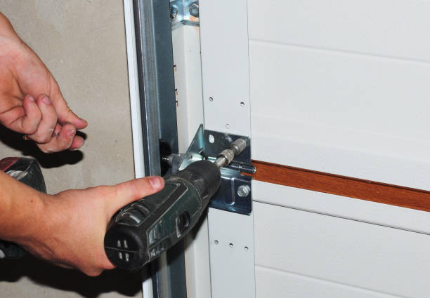
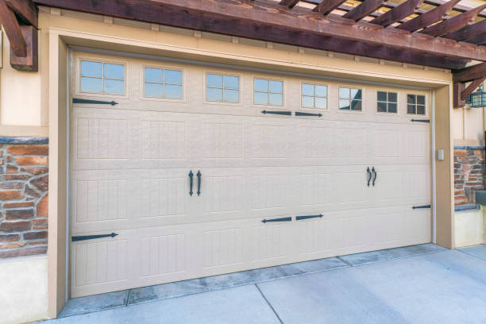

USA - Nationwide
info@chikegaragedoorrepair.xyz
USA - Nationwide
info@chikegaragedoorrepair.xyz

USA - Nationwide Garage Door repair
Click Here To Call Us (888) 964-1837
When your garage door malfunctions, it can feel like the end of the world. A broken garage door not only hampers your daily routine but also poses security risks. That's why finding reliable “garage door repair near me” services is essential. Our company understands the urgency and provides fast, efficient, and quality repairs to residents . Our experienced technicians arrive promptly at your location, equipped with the tools and parts necessary to get your garage door functioning again. We pride ourselves on our reputation as the best in the business, thanks to our commitment to quality service and customer satisfaction.

Emergencies can strike at any time. Whether it’s the middle of the night or during a busy weekend, a malfunctioning garage door can cause significant inconvenience. That’s why we offer 24/7 emergency garage door repair services to ensure you’re never left stranded. Our team of certified professionals is just a call away, ready to address any issue, big or small. We use high-quality materials and are trained to diagnose and fix any problem promptly. You can trust our commitment to fast response times, so you can have peace of mind knowing we’re there when you need us most.

The springs in your garage door are crucial for its functionality, and our garage door spring repair services are here to ensure they are in perfect condition. Over time, springs can wear out or break due to constant use, creating significant safety hazards and operational issues. Our experienced technicians specialize in identifying spring issues, whether they are torsion springs or extension springs. We emphasize safety and efficiency in our repairs, using high-quality materials to replace any damaged springs. We also provide guidance on regular maintenance practices to extend the life of your door springs. Trust us with your garage door spring repair and regain the peace of mind that comes with a properly functioning garage door system.

Is your garage door opener not functioning? Whether it's due to a malfunctioning remote or a more complex electrical issue, we have the solution. Our garage door opener repair services in Usa - Nationwide cover a wide range of brands and models. Our skilled technicians will troubleshoot the issue and provide a comprehensive fix, ensuring your garage door operates smoothly. We pride ourselves on using only the best quality parts and offering transparent pricing, so you’ll never have any hidden costs. Trust us to restore the functionality of your garage door opener quickly and efficiently.

At our company, we believe that high-quality garage door services should not break the bank. Our affordable garage door repair ensures you get the best service without overspending. We offer transparent pricing with no hidden fees, enabling you to receive top-notch repairs at competitive rates. Our knowledgeable technicians assess your garage door’s needs efficiently, providing cost-effective solutions tailored to your specific situation. Whether you need a simple fix or a more complex repair, we are dedicated to finding the right solution for your budget. Don’t compromise on safety or quality – choose us for your garage door needs !

If you need a new garage door, our garage door installation services are here to help. We offer a vast selection of styles, materials, and colors to choose from, ensuring your new door matches your home’s aesthetic. Our installation team is highly skilled, ensuring that your new garage door is installed correctly and safely.
Why choose us for your garage door installation? Our commitment to excellence is reflected in our workmanship and customer care. We provide a seamless installation process, from helping you select the perfect door to completing the installation with precision and efficiency. Plus, we stand behind our work with warranties for materials and labor.

Garage door cables are essential for the proper lifting of your door, and when they wear out or break, you need prompt repairs. Our garage door cable repair services in Usa - Nationwide focus on quickly restoring your door's functionality. Our technicians have the expertise to replace or repair cables safely, preventing further damage to your garage door system.
What makes us the best choice for garage door cable repair? We use high-quality, durable cables and adhere to strict safety standards during all repairs. Our technicians are trained to handle various cable issues, ensuring that your garage door operates smoothly once again. Trust us for reliable and efficient service.

Garage door cables are an integral part of the overall system, assisting in lifting and lowering the door smoothly. When your cables fray or break, it can create unsafe conditions and prevent your garage door from functioning. Our **garage door cable repair** services in Usa - Nationwide are designed to address these critical issues promptly.
Our professional team is well-versed in detecting cable-related problems, ensuring quick resolutions to restore your garage door's functionality. By utilizing high-strength cables suited for your door’s specifications, we ensure repairs last and operate safely.
Safety is our primary concern; that’s why our technicians follow precise procedures to ensure proper installation and repair of cables while minimizing risks. Additionally, we provide recommendations on routine maintenance to prevent future issues. When you choose our services, you can trust that your garage door system is in capable hands.

For businesses, a functioning garage door can impact operations significantly. Our commercial garage door repair services in Usa - Nationwide are designed with your needs in mind, addressing issues that disrupt your business. We specialize in repairing high-usage doors and ensuring minimal downtime while providing top-quality repairs.
Why choose us for commercial garage door repairs? Our technicians understand the unique challenges of commercial doors. We work efficiently to pinpoint problems and implement solutions while adhering to your schedule. Our dedication to quality and exceeding expectations ensures that your business continues to operate smoothly.

The tracks of your garage door are integral for its smooth operation. If your garage door is off-track, it can be both inconvenient and dangerous. Our specialized garage door track repair services ensure that your garage door slides smoothly and effectively. Our experienced technicians will inspect, repair, or replace damaged tracks promptly to restore full functionality. We pride ourselves on our attention to detail and commitment to quality, providing you peace of mind knowing your garage door is in good hands.

When searching for the best garage door repair company look no further! Our commitment to excellence, reliability, and customer satisfaction sets us apart from our competitors. With years of experience under our belts, we ensure that every repair and installation is executed with precision. Our team of skilled technicians is dedicated to keeping abreast of the latest trends and technologies in garage doors to provide you the best service possible. Customer feedback and satisfaction are at the core of our business model, and we work hard to build trust and reliability with each job we undertake. Let us show you why we are considered the best choice for all your garage door repair needs.

Emergencies don’t follow a schedule, which is why our **24-hour garage door repair services** are so crucial. When your garage door suddenly malfunctions late at night or early morning, our trained technicians are ready to assist. Our commitment to being available around-the-clock ensures that you won’t be left in a frustrating situation for long.
We understand how vital your garage door is to your daily routine and security, so we prioritize rapid response times and effective solutions. Our technicians arrive fully equipped to handle most emergency repairs on the spot, ensuring you can get back to your day without delay.
We stand behind our work, offering affordable rates even for emergency services. With our reliable and efficient response, we make sure that your safety and convenience come first at all hours. You can trust us to be the dependable service provider you need in times of unexpected repairs.

Regular maintenance is key to prolonging the life of your garage door and avoiding costly repairs. Our garage door maintenance services include thorough inspections, lubrication, and adjustments to ensure your system runs smoothly. We offer customized maintenance plans tailored to your specific garage door needs.
Why choose us for garage door maintenance? Our technicians are dedicated to maintaining your door's functionality and safety. We provide detailed reports, helping you understand the status of your door and any recommended actions. Consistent maintenance from our team ensures that your garage door remains in optimal condition year-round.

The motor is one of the most critical components of your garage door opener. If you're facing issues with your garage door not opening or closing properly, it could be a sign of motor problems. Our garage door motor repair services are specifically designed to address motor-related issues efficiently. Our skilled technicians can diagnose whether repair or replacement is necessary, and we use only high-quality parts to ensure lasting performance. We understand the urgency when your garage door becomes inoperable, so we give each job our full attention to get your motor running efficiently again. Trust our years of experience to restore the functionality of your garage door motor quickly and effectively.

As a local company, we understand the unique garage door needs of residents in Usa - Nationwide. Our local garage door repair services prioritize convenience, ensuring you receive prompt and reliable assistance whenever you need it. With a focus on community service, we are proud to support our neighbors with high-quality repairs.
Why choose our local services? We pride ourselves on our strong customer relationships and our commitment to quality. Our technicians are familiar with the common issues that arise in the area and can diagnose and fix problems quickly. We aim to be a trusted part of the Usa - Nationwide community, providing excellent garage door repair services.

Garage door emergencies don’t keep business hours, and neither do we. Our 24-hour garage door repair services mean that you’re covered, no matter when a problem arises. Our dedicated team is on standby to assist you with emergency repairs without delay. With our team of certified technicians available around the clock, you can count on us for fast, reliable service day or night. We’re committed to providing peace of mind, ensuring that a malfunctioning garage door doesn't disrupt your life.

Overhead garage doors are popular for their efficiency and space-saving qualities, but like all mechanical devices, they can experience issues over time. Our overhead garage door repair services focus on restoring your overhead door's functionality and safety. We handle everything from spring and cable repairs to full system overhauls. Our skilled technicians are trained to recognize the specific needs of overhead doors, ensuring that all components are in perfect working order. With our commitment to quality repairs and customer service, we guarantee that your overhead garage door will operate smoothly and reliably after our intervention.

The convenience of an automatic garage door is undeniable, but when it malfunctions, it can be very frustrating. Our automatic garage door repair services in Usa - Nationwide are designed to address any issue associated with automatic systems, from faulty sensors and remote malfunctions to complete failures. Our trained technicians quickly assess the problem and provide effective solutions, ensuring that your automatic door is restored to its full functionality. Choose us for our reliability, expertise, and commitment to customer satisfaction.

The **hinges** on your garage door play a critical role in its ability to operate smoothly. Worn or damaged hinges can lead to operational issues or even safety hazards. Our **garage door hinge repair services** focus on restoring your door’s functionality quickly and efficiently by addressing any hinge-related issues.
Our technicians are well-skilled in handling all types of hinge problems, and we’ll provide a comprehensive inspection to identify any faulty components. Whether repairs or replacements are necessary, we will ensure that your garage door operates as intended.
We value your time and safety, which is why we prioritize prompt service and high-quality repairs. Our reliable approach, use of durable materials, and dedication to customer satisfaction set us apart in the industry.

Roll-up garage doors offer convenience and space-saving solutions, but when they malfunction, they require specialized care. Our **roll-up garage door repair services** in Usa - Nationwide are tailored to diagnose and resolve a variety of issues effectively.
We understand the mechanics behind roll-up doors, whether they are manual or automatic, and we possess the experience necessary to troubleshoot and repair any related problems, from spring replacements to track realignments. Our technicians are trained to handle different types of roll-up doors, ensuring that you get the best possible service, tailored to your specific door type.
By choosing our service, you're selecting a company dedicated to quality and efficiency. Our commitment to timely repairs, paired with excellent customer service, ensures that your satisfaction is our top priority.

If you’re experiencing issues with your garage door, our garage door troubleshooting services in Usa - Nationwide are the perfect solution. Our trained technicians will evaluate your door’s performance, identify problems, and recommend the best course of action to restore functionality.
What sets our troubleshooting services apart? We pride ourselves on our thorough approach, ensuring we don’t overlook any potential issues. Our extensive experience allows us to resolve both common and complex problems, providing you with a clear understanding of your garage door’s condition and what repairs are needed.

A broken garage door can disrupt your daily life and pose a security risk. Our broken garage door repair services focus on quickly diagnosing and fixing the issue, so you can regain access to your garage without worry.
Why should you choose us for broken garage door repairs? Our skilled technicians understand the urgency of a broken door. We offer prompt and reliable service, ensuring you receive quality repairs that last. Your safety and satisfaction are our top priorities, making us the ideal choice for your garage door needs.

Hinges are a critical component of your garage door’s functionality, and when they fail, it can lead to significant problems. Our garage door hinge repair services are designed to address any hinge-related issues, ensuring smooth operation and preventing further damage.
What makes us stand out for hinge repairs? Our team is equipped with the knowledge and tools necessary to handle various hinge types and problems. We focus on quality workmanship, ensuring your garage door functions optimally. Trust us to deliver reliable and efficient hinge repairs.
.jpg)
Roll-up garage doors are popular for their efficiency and space-saving design, but like all garage doors, they require regular maintenance and repair. Our roll-up garage door repair services cater to both residential and commercial clients. Whether you’re facing issues with the roll-up mechanism, misaligned tracks, or damaged slats, our experienced team has the knowledge to fix it all. We pride ourselves on employing best practices to provide efficient repairs that extend the life of your roll-up garage door. Trust our expertise to restore your roll-up door’s functionality and aesthetic appeal.

If your garage door springs are broken or worn out, it’s crucial to have them replaced as soon as possible. Attempting to use a garage door with faulty springs can lead to severe damage or injuries. Our garage door spring replacement services utilize high-quality replacement springs tailored to your door’s specifications. Our technicians will swiftly and safely replace your springs, ensuring that your garage door operates smoothly and safely. Choose us for our expertise, professional service, and dedication to your safety.
USA - Nationwide Garage Door repair Pros
(888) 964-1837
info@chikegaragedoorrepair.xyz
09.00 AM - 09.00 PM
09.00 AM - 12.00 PM